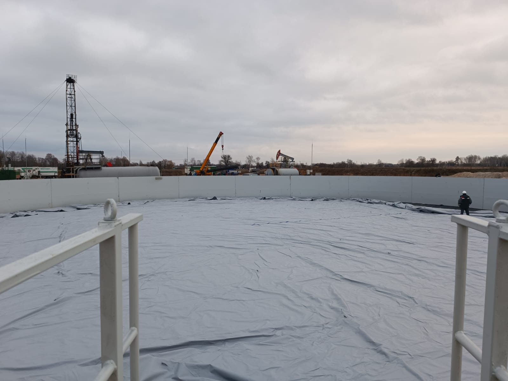

ООО СтромАвтоЛиния
«ООО Стромавтолиния-Рус»
Производство нестандартного оборудования

наши услуги
-
токарнофрезерная обработка

-
лазерная резка метала

-
гидроабразивная резка

-
плазменная резка металла

-
сварка крупногабаритных изделий и емкостей

-
Пескоструйная обработка в том числе крупногабаритных изделий и емкостей

-
Покрытие форпол

наши работы
- 
-

-

-

-

-

-

-

О компании
ООО «Стромавтолиния» является машиностроительным предприятием, имеющее дочернее предприятие «Стромавтолиния-Рус» работающее на рынке российской федерации. Обеспеченное собственным материально-техническим оснащением (производством) и собственным конструкторско-техническим отделом.1. Строительная отрасль:
- производство оборудования для кирпичного (пластинчатые питатели, глинорыхлители, двухвальные и одновальные смесители, валковые дробилки, ленточные конвейера, прессы-экструдеры, многоковшовые экскаваторы), шиферного, шпального производства (натяжные устройства, виброплощадки с изменяемой амплитудой колебания, кантователи, автоматические пилы резки арматуры, штабелеры, роторные и ленточные дозаторы, самоходные бетоноукладчики), автономные мобильные комплексы для хранения, приготовления и выдачи сухих цементных смесей с возможностью перемешивания инертных материалов и получения заданных сыпучих смесей, а также отдельных агрегатов (силоса, компрессорные станции, рукавные фильтры, бункера, оснащенные весоизмерительным оборудованием)
2. Экологическая отрасль:
- производство сортировочных линий, их отдельных агрегатов (барабанные сепараторы, Z-образные, L-образные, плоские, желобчатые конвейера, магнитные сепараторы)
- производство технологических линий по переработке строительных отходов или отходов предприятий, выпускающих строительные материалы, отходов промышленного производства, а также отдельных узлов и агрегатов (инерционные грохоты различных мощностей с регулируемой амплитудой колебаний, ленточные и пластинчатые питатели, дробилки роторные, щековые, конусные, валковые, гидроножницы)
3. Пищевая промышленность:
- самоходные ленточные штабелеры для подачи и укладки мешков с сыпучими продуктами (без использования гидравлики), шнековые транспортеры различного диаметра и длины.
4. Нефтехимическая отрасль:
- различное емкостное оборудование горизонтального и вертикального исполнения, с установкой на почве, на фундаментах, на шасси, оснащенные перемешивателями, насосным и др.оборудованием. Материал изготовления - черные и нержавеющие металлы различных марок. На предприятии организован технологический процесс, имеется большой опыт в нанесении антикоррозийных покрытий подземного и надземного размещения, а также для работы в различных средах (пескоструйная и дробеструйная обработка как мелких, так и крупногабаритных изделий, контроль за толщиной покрытия, опыт работы как с отечественными, так и с импортными покрытиями).
5. Бумажная промышленность:
- конвейерное оборудование с пластиковыми модульными лентами, электропередаточные тележки, моторизованные роликовые конвейера и т.д.
6. Различные металлоконструкции для любых отраслей производства - фермы, колонны, опорные металлоконструкции для оборудования, лестницы, пролеты и т.д. Также наше предприятие активно занимается импортозамещением, модернизацией существующих производств и оборудования.
Наиболее крупными реализованными проектами за последние годы являются:
• Великолукский завод "Транснефтемаш" АО "Транснефть - Верхняя Волга" - Колодцы для трубопроводов КТ подземного размещения для диаметров труб 530 - 1220мм, а также нанесение антикоррозионного покрытия на колодцы КТ согласно ОТТ-25.220.01-КТН-113-14 и РД-25.220.01-КТН-112-14 ОАО «АК «Транснефть» (1000 тонн изделий).
• ОАО «Белоруснефть» - различное емкостное оборудование (вертикальные, горизонтальные, на шасси, для технологической жидкости, соленых растворов, проппанта, растворителя и др. объемом 50-60м3 в количестве 98 единиц, емкость мобильная с мягким вкладышем площадью 3000м3), блок-контейнеры, различная трубопроводные элементы, заглубленные емкости и др.
• ОАО «Спецжелезобетон» - модернизация технологической линии производства железобетонных шпал (разработка, производство и замена всех агрегатов линии, результатом чего является существенное уменьшение энергоемкости, увеличение ресурса оборудования), освоение производства комплектующих на существующих импортных линиях производства тротуарной плитки и железобетонных труб разного диаметра.
• ОАО «Белцветмет» - поставка линии по переработке алюминиевых шлаков на производство шлакораскисляющей смеси (ШРС). В составе линии - устройство для дробления шлака (конусная дробилка), грохот, сито инерционное, смеситель, установка фасовки приготовленного материала в мешки по 20 -25 кг, конвейерная транспортная система, система управления линией с соединительными кабелями, система пылеудаления.
• ООО «БМЗ-Экосервис» - поставка мобильной линии сортировки огнеупорного лома, мощностью 10т в час. В составе линии – грохот, магнитный сепаратор, конвейерная транспортная система, кабина сортировки. Поставка гидравлических ножниц для дробления железобетона с ножом для резки арматуры для установки на экскаватор VOLVO.
• ОАО «ДСТ №6» - поставка грохота к асфальтосмесительной установке Тельтомат
• ОАО «Мозырьсоль» - поставка резервуара стального вертикального цилиндрического 700 м3
• ОАО «Бумажная фабрика «Спартак» - поставка автоматического конвейера с пушером (выталкивателем), автоматической транспортной тележки, моторизированных роликовых/пластиковых конвейеров.
• ОАО «Мозырский НПЗ» -поставка металлоконструкций резервуаров РВС-2000 Пила резки плетей шпал ЖБШ 22 - Диаметр режущего диска – max 650мм, min 550мм
- Частота вращения - не менее 46, 75 с-1
- Габаритные размеры ДхШхВ – не более 2100х690х1740мм
- Масса – не более 630кг
Является модернизированной, заменены направляющие типа «ласточкин хвост» на шариковые линейные направляющие ведущих мировых производителей, что при правильном техническом обслуживании исключает выход из строя данных направляющих.
2. Устройство натяжное ЖБШ 12Б
- Наибольшее усилие натяжения от одного гидроцилиндра – не менее 400кН
- Число пучков одновременного натяжения – 2шт
- Наибольший ход поршня цилиндра гидравлического – 180мм
- Наибольший ход поршня цилиндра пневматического – 360мм
- Номинальное рабочее давление гидравлической системы – 180 кг/см2
- Номинальное рабочее давление воздушной системы – 5 кг/см2
- Установленная мощность – не более 6,6 кВт
- Габаритные размеры ДхШхВ – не более 2709х1370х2000мм
- Масса – не более 3000кг Предлагается модернизированное устройство натяжное. Мотор-редуктор установлен на каждом гайковерте посредством установленных предохранительных муфт и бесконтактных выключателей происходит остановка индивидуально каждого гайковерта при упоре винта.
5. Виброплощадка ЖБШ 16Д
- Грузоподъемномть – не менее 10т
- Частота колебаний – 3000 Кл/мин
- Характер колебаний – вертикально-направленные
- Время уплотнения - не более 180сек
- Число вибролотков – 10шт
- Способ крепления формы к виброплощадке – электромагнитный
- Установленная мощность электродвигателей – не более 44 кВт
- Габаритные размеры ДхШхВ – не более 16920х1076х760мм
Площадка является модернизированной, с улучшенными технико-экономическими и энергетическими показателями. Отсутствуют карданные валы, промежуточные опоры, шарниры и др., не требуются расходы на эксплуатационные материалы (масло, сальники и т.д.). Сведены к минимуму затраты на обслуживание и обслуживающий персонал.
6. Кантователь ЖБШ 19
- Грузоподъёмность – не менее 7700 кг
- Угол кантователя – 180 град
- Время катования – 70с
- Рабочее давление – не менее 8 Мпа
- Максимальное давление – 16 Мпа
- Расход воздуха - 0,05 м3/час
- Установленная мощность – не более 15кВт
- Габаритные размеры ДхШхВ – не более 9400х2530х1310мм
- Масса– не более 11000кг
7.Конвейер пластинчатый у кантователя ЖБШ 20
- Расстояние между цепными колесами – 14280мм
- Расстояние между цепными балками – 680мм
- Шаг цепи конвейера – 170мм
- Высота балок цепи от пола – 700мм
- Длина поперечных балок цепи – 682мм
- Скорость движения конвейера – 20 м/мин
- Установленная мощность – не более 5,3кВт
- Габаритные размеры ДхШхВ – не более 15450х2430х700мм
- Масса – не более 4740кг
8. Пост штабелирования ЖБШ 57
- Количество штабелировщиков - 2шт
- Количество штабелируемых брусьев в каждом ряду – 8шт
- Количество штабелируемых рядов по высоте брусьев – 5шт
- Количество штабелируемых рядов по высоте шпал – 7шт
- Суммарная грузоподъемность одного штабелировщика – 15000кг
- Максимальная высота подъема штабеля – 560мм
- Скорость движения брусьев по рольгангу – 22 м/мин
- Количество рольгангов на посту – 3шт
- Суммарная мощность установленного электрооборудования – на более 15кВт
- Габаритные размеры ДхШхВ – не более 13748х4715х2730мм
- Масса – не более 22000кг
9. Бухтодержатель ЖБШ 01
- Количество катушек – 48шт
- Установленная мощность двигателей – не более 2,91кВт
- Мощность двигателя передвижения крана – не более 2,2 кВт
- Грузоподъемность крана – 5кН
- Габаритные размеры ДхШхВ – не более 12960х3732х5010мм
- Масса – не более 19800кг
10.Транспортер вытяжной ЖБШ-04-01
- Количество одновременно протягиваемых струнопакетов – 1шт
- Усилие натяжение струнопакета при протяжке – 22 кН
- Скорость движения цепи – не более 0,37 м/с
- Мощность привода – не более 15 кВт
- Габаритные размеры ДхШхВ – не более 17990х1500х1270мм
- Масса – не более 4700кг
11. Рольганг приводной ЖБШ 08А
- Мощность привода – не более 2,2 кВт
- Скорость перемещения формы – не более 0,25м/с
- Масса перемещаемого груза – не более 13000кг
- Габаритные размеры ДхШхВ – не более 13820х1138х620мм
- Масса – не более 2070кг
12. Форма ЖБШ 07ДВ.00.00.000 СБ в комплекте (пакеты клиньев – 4шт., винты натяжения с гайкой – 4шт., диафрагмы – 12шт.) для производства железобетонных шпал типа III для нераздельного рельсового скрепления с резьбовым прикреплением рельса к шпале (подтип Ш3-Д) для железнодорожных путей с шириной рельсовой колеи 1520мм для применения рельсами типа Р65 по ТУ 5864-255-01124323-2008